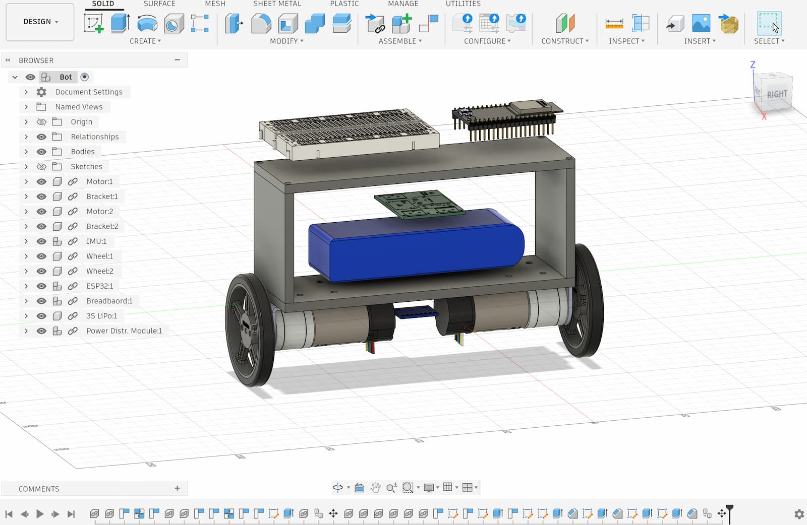
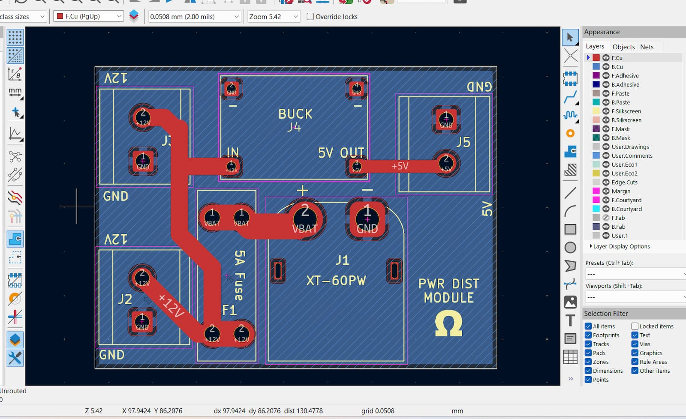
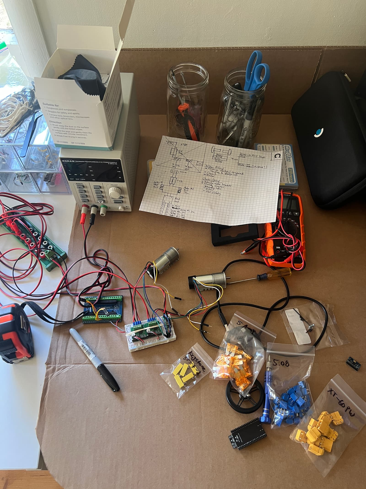
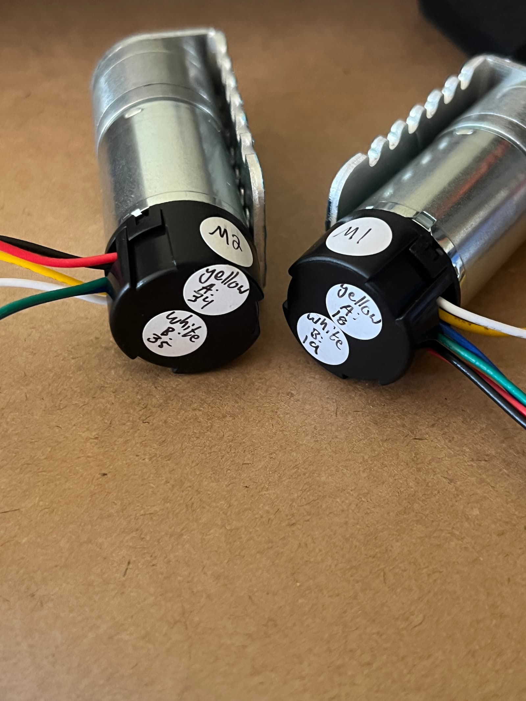
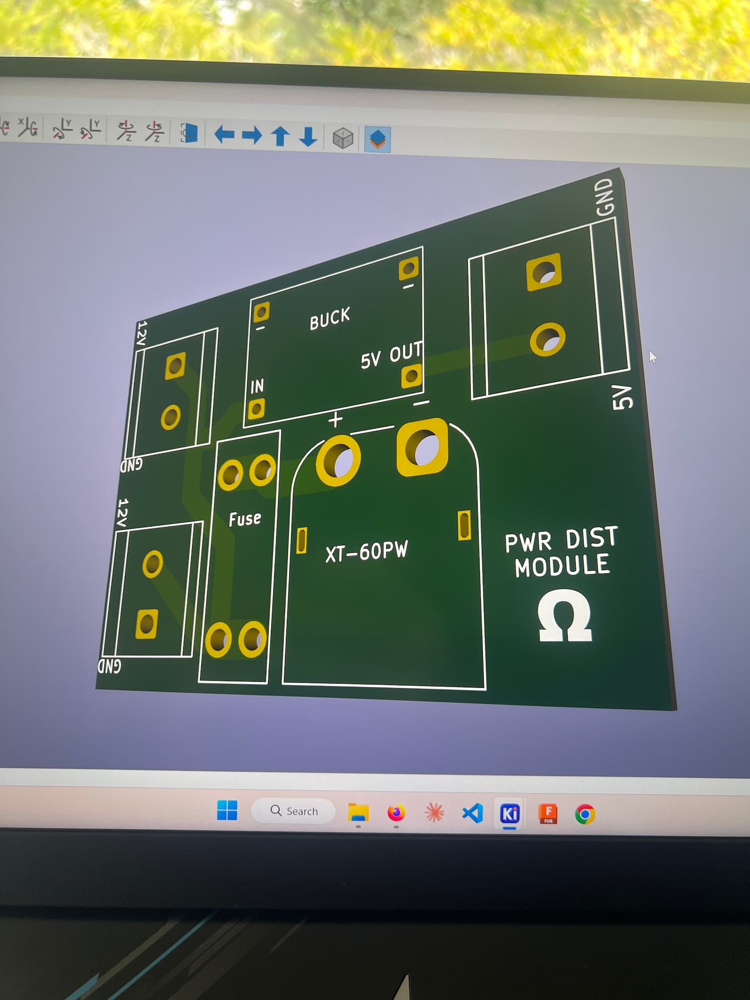
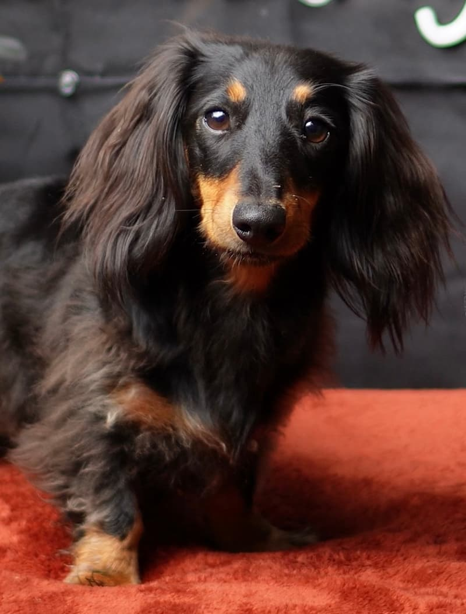

Alex Main
Welcome. Choose your experience.
I spent twelve years as a corporate lobbyist and earned an MBA along the way, watching technology reshape the world from the policy side. Its pace convinced me not to watch from the sidelines anymore, and I left to study engineering full time and build real things.
Since January 2026, I’ve focused on fundamentals: programming, applied linear algebra, electronics, physics: learned from first principles and tested at the workbench. I use AI to accelerate, not replace, my understanding. Now I’m going deep into robotic reinforcement learning.
After a career spent working with people, they're still at the center of how I think about building. This site documents my journey. I live in Mill Valley, in Marin County just north of San Francisco, with my dog, Penny.
Current Focus: Robot Learning
- Reinforcement learning: PyTorch, Isaac Lab
- Simulation: Isaac Sim, Gazebo
- Robotics middleware: ROS2
- Now building: Sim-to-Real Self-Balancing Robot
Side Quests
- KiCad (PCB design), Autodesk Fusion (CAD), 3D Printing, embedded C/C++
What I Learned from 12 Years of Lobbying
- Negotiation & coalition-building: I've negotiated with legislators, executives, and opposing interests with high stakes on every side.
- Business & policy judgment: MBA, 2023. I understand what makes technology fundable, regulatable, and deployable, not just buildable.
- Working through ambiguity: I spent a career making progress when the rules, players, and goals were constantly changing.
- People first: I explain complex ideas to non-experts and build trust across very different stakeholders.
Foundations (since January 2026)
- Math & physics: applied linear algebra, circuit analysis, classical mechanics/electromagnetism
- Electronics: circuit design, bench testing, hardware
- Programming: Python, C++, Git, Agentic Coding
Education
- Self-directed engineering study, 2026–present
- MBA, CSUS, 2023
- BA, Cal Poly Humboldt, 2013
Self-Balancing Robot
Designed and built from scratch, featuring IMU sensor fusion, real-time PID control, custom PCB hardware, and closed-loop motor control. Classic control platform for eventual RL/simulation.





Alex Main
Mill Valley, CA

PENNY
O.A.P.C
Penny is an Organic Autonomous Pest Control (OAPC) System. Strong vs. rats, moles. Weak vs. coyotes. Toss up: deer. *Maintenance: 2 meals/day, belly rubs*